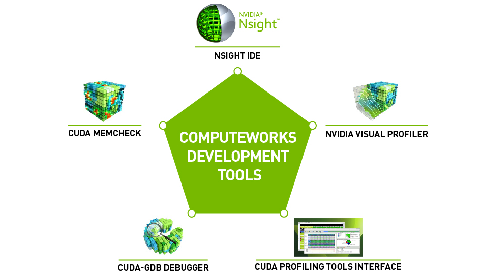

CUDA Python: Accelerating Python Applications with GPU Computing

Introduction
CUDA Python brings the power of NVIDIA’s CUDA platform directly to Python developers, enabling massive parallel computing capabilities without leaving the Python ecosystem. This comprehensive guide explores how to leverage GPU acceleration for computationally intensive tasks, from basic vector operations to complex machine learning algorithms.
What is CUDA Python?
CUDA Python is a collection of Python packages that provide direct access to CUDA from Python. It includes several key components:
- CuPy: NumPy-compatible library for GPU arrays
- Numba: Just-in-time compiler with CUDA support
- PyCUDA: Low-level Python wrapper for CUDA
- cuDF: GPU-accelerated DataFrame library
- CuML: GPU-accelerated machine learning library
Setting Up Your Environment
Prerequisites
Before diving into CUDA Python, ensure you have:
- An NVIDIA GPU with CUDA Compute Capability 3.5 or higher
- NVIDIA drivers installed
- CUDA Toolkit (version 11.0 or later recommended)
- Python 3.8 or later
Installation
The easiest way to get started is with conda:
# Create a new environment
conda create -n cuda-python python=3.9
conda activate cuda-python
# Install CUDA Python packages
conda install -c conda-forge cupy
conda install -c conda-forge numba
conda install -c rapidsai cudf cuml
# Alternative: pip installation
pip install cupy-cuda11x # Replace 11x with your CUDA version
pip install numbaGetting Started with CuPy
CuPy provides a NumPy-like interface for GPU computing, making it the most accessible entry point for CUDA Python.
Basic Array Operations
import cupy as cp
import numpy as np
import time
# Create arrays on GPU
gpu_array = cp.array([1, 2, 3, 4, 5])
print(f"GPU Array: {gpu_array}")
print(f"Device: {gpu_array.device}")
# Convert between CPU and GPU
cpu_array = np.array([1, 2, 3, 4, 5])
gpu_from_cpu = cp.asarray(cpu_array)
cpu_from_gpu = cp.asnumpy(gpu_array)Performance Comparison
def benchmark_operations():
size = 10**7
# CPU computation with NumPy
cpu_a = np.random.random(size)
cpu_b = np.random.random(size)
start = time.time()
cpu_result = np.sqrt(cpu_a**2 + cpu_b**2)
cpu_time = time.time() - start
# GPU computation with CuPy
gpu_a = cp.random.random(size)
gpu_b = cp.random.random(size)
start = time.time()
gpu_result = cp.sqrt(gpu_a**2 + gpu_b**2)
cp.cuda.Stream.null.synchronize() # Wait for GPU to finish
gpu_time = time.time() - start
print(f"CPU time: {cpu_time:.4f} seconds")
print(f"GPU time: {gpu_time:.4f} seconds")
print(f"Speedup: {cpu_time/gpu_time:.2f}x")
benchmark_operations()Advanced CuPy: Custom Kernels
For maximum performance, you can write custom CUDA kernels:
import cupy as cp
# Define a custom kernel
vector_add_kernel = cp.RawKernel(r'''
extern "C" __global__
void vector_add(const float* a, const float* b, float* c, int n) {
int idx = blockIdx.x * blockDim.x + threadIdx.x;
if (idx < n) {
c[idx] = a[idx] + b[idx];
}
}
''', 'vector_add')
def custom_vector_add(a, b):
assert a.shape == b.shape
c = cp.empty_like(a)
n = a.size
# Launch kernel
threads_per_block = 256
blocks_per_grid = (n + threads_per_block - 1) // threads_per_block
vector_add_kernel((blocks_per_grid,), (threads_per_block,),
(a, b, c, n))
return c
# Usage
a = cp.random.random(1000000).astype(cp.float32)
b = cp.random.random(1000000).astype(cp.float32)
result = custom_vector_add(a, b)Numba CUDA: Python-to-CUDA JIT Compilation
Numba allows you to write CUDA kernels in Python syntax:
from numba import cuda
import numpy as np
import math
@cuda.jit
def matrix_multiply_kernel(A, B, C):
row, col = cuda.grid(2)
if row < C.shape[0] and col < C.shape[1]:
temp = 0.0
for k in range(A.shape[1]):
temp += A[row, k] * B[k, col]
C[row, col] = temp
def gpu_matrix_multiply(A, B):
# Allocate memory on GPU
A_gpu = cuda.to_device(A)
B_gpu = cuda.to_device(B)
C_gpu = cuda.device_array((A.shape[0], B.shape[1]), dtype=A.dtype)
# Configure grid and block dimensions
threads_per_block = (16, 16)
blocks_per_grid_x = math.ceil(A.shape[0] / threads_per_block[0])
blocks_per_grid_y = math.ceil(B.shape[1] / threads_per_block[1])
blocks_per_grid = (blocks_per_grid_x, blocks_per_grid_y)
# Launch kernel
matrix_multiply_kernel[blocks_per_grid, threads_per_block](A_gpu, B_gpu, C_gpu)
# Copy result back to host
return C_gpu.copy_to_host()
# Example usage
A = np.random.random((1000, 1000)).astype(np.float32)
B = np.random.random((1000, 1000)).astype(np.float32)
C = gpu_matrix_multiply(A, B)Memory Management Best Practices
Efficient memory management is crucial for GPU performance:
import cupy as cp
# Memory pool for efficient allocation
mempool = cp.get_default_memory_pool()
pinned_mempool = cp.get_default_pinned_memory_pool()
def efficient_gpu_computation():
# Use context manager for automatic cleanup
with cp.cuda.Device(0): # Use GPU 0
# Pre-allocate memory
data = cp.zeros((10000, 10000), dtype=cp.float32)
# Perform computations
result = cp.fft.fft2(data)
result = cp.abs(result)
# Memory info
print(f"Memory used: {mempool.used_bytes() / 1024**2:.1f} MB")
print(f"Memory total: {mempool.total_bytes() / 1024**2:.1f} MB")
return cp.asnumpy(result)
# Free unused memory
def cleanup_gpu_memory():
mempool.free_all_blocks()
pinned_mempool.free_all_blocks()Real-World Applications
Image Processing Pipeline
import cupy as cp
from cupyx.scipy import ndimage
def gpu_image_processing(image):
"""GPU-accelerated image processing pipeline"""
# Convert to GPU array
gpu_image = cp.asarray(image)
# Apply Gaussian blur
blurred = ndimage.gaussian_filter(gpu_image, sigma=2.0)
# Edge detection (Sobel filter)
sobel_x = ndimage.sobel(blurred, axis=0)
sobel_y = ndimage.sobel(blurred, axis=1)
edges = cp.sqrt(sobel_x**2 + sobel_y**2)
# Threshold
threshold = cp.percentile(edges, 90)
binary = edges > threshold
return cp.asnumpy(binary)Monte Carlo Simulation
from numba import cuda
import numpy as np
@cuda.jit
def monte_carlo_pi_kernel(rng_states, n_samples, results):
idx = cuda.grid(1)
if idx < rng_states.shape[0]:
count = 0
for i in range(n_samples):
x = cuda.random.xoroshiro128p_uniform_float32(rng_states, idx)
y = cuda.random.xoroshiro128p_uniform_float32(rng_states, idx)
if x*x + y*y <= 1.0:
count += 1
results[idx] = count
def estimate_pi_gpu(n_threads=1024, n_samples_per_thread=10000):
# Initialize random number generator states
rng_states = cuda.random.create_xoroshiro128p_states(n_threads, seed=42)
results = cuda.device_array(n_threads, dtype=np.int32)
# Launch kernel
threads_per_block = 256
blocks_per_grid = (n_threads + threads_per_block - 1) // threads_per_block
monte_carlo_pi_kernel[blocks_per_grid, threads_per_block](
rng_states, n_samples_per_thread, results)
# Calculate pi estimate
total_inside = results.sum()
total_samples = n_threads * n_samples_per_thread
pi_estimate = 4.0 * total_inside / total_samples
return pi_estimate
pi_gpu = estimate_pi_gpu()
print(f"GPU Pi estimate: {pi_gpu}")Performance Optimization Tips
1. Memory Access Patterns
# Bad: Non-coalesced memory access
@cuda.jit
def bad_transpose(A, A_T):
i, j = cuda.grid(2)
if i < A.shape[0] and j < A.shape[1]:
A_T[j, i] = A[i, j] # Non-coalesced
# Good: Coalesced memory access with shared memory
@cuda.jit
def good_transpose(A, A_T):
# Use shared memory for efficient transpose
tile = cuda.shared.array((16, 16), dtype=numba.float32)
tx = cuda.threadIdx.x
ty = cuda.threadIdx.y
bx = cuda.blockIdx.x * 16
by = cuda.blockIdx.y * 16
x = bx + tx
y = by + ty
if x < A.shape[1] and y < A.shape[0]:
tile[ty, tx] = A[y, x]
cuda.syncthreads()
x = bx + ty
y = by + tx
if x < A_T.shape[1] and y < A_T.shape[0]:
A_T[y, x] = tile[tx, ty]2. Stream Processing
import cupy as cp
def async_processing():
# Create multiple streams for overlapping computation
stream1 = cp.cuda.Stream()
stream2 = cp.cuda.Stream()
# Process data in chunks
chunk_size = 1000000
data1 = cp.random.random(chunk_size)
data2 = cp.random.random(chunk_size)
with stream1:
result1 = cp.fft.fft(data1)
with stream2:
result2 = cp.fft.fft(data2)
# Synchronize streams
stream1.synchronize()
stream2.synchronize()
return result1, result2Debugging and Profiling
Error Handling
import cupy as cp
def safe_gpu_computation():
try:
# GPU computation that might fail
large_array = cp.zeros((50000, 50000), dtype=cp.float64)
result = cp.linalg.svd(large_array)
return result
except cp.cuda.memory.OutOfMemoryError:
print("GPU out of memory. Try reducing array size.")
return None
except Exception as e:
print(f"GPU computation failed: {e}")
return NoneProfiling with CuPy
import cupy as cp
# Enable profiling
cp.cuda.profiler.start()
# Your GPU code here
data = cp.random.random((5000, 5000))
result = cp.linalg.eig(data)
# Stop profiling
cp.cuda.profiler.stop()
# Use nvprof or Nsight Systems for detailed analysisConclusion
CUDA Python opens up powerful GPU acceleration capabilities for Python developers. Whether you’re processing large datasets, running complex simulations, or implementing machine learning algorithms, the combination of Python’s ease of use and CUDA’s parallel computing power provides significant performance advantages.
Key takeaways:
- Start with CuPy for NumPy-like GPU operations
- Use Numba for custom CUDA kernels in Python
- Pay attention to memory management and access patterns
- Profile your code to identify bottlenecks
- Consider the data transfer overhead between CPU and GPU
As GPU computing continues to evolve, CUDA Python remains an essential tool for high-performance computing in the Python ecosystem. The examples and techniques covered in this article provide a solid foundation for building GPU-accelerated applications that can handle the computational demands of modern data science and scientific computing.